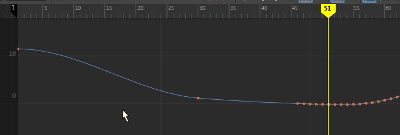

在曲线图编辑器(Graph Editor)中将关键帧添加到动画曲线
- 在“曲线图编辑器”(Graph Editor)中，选择该曲线。
- 请执行下列任一操作：
- 从工具栏中选择“插入关键帧”(Insert Keys)工具
 。
。
- 从菜单栏中选择(Keys > Add Key)工具或(Keys > Insert Keys)工具。
- 从工具栏中选择“插入关键帧”(Insert Keys)工具
- 拖动选择曲线，然后单击鼠标中键以在曲线上添加新的关键帧。
添加到曲线的所有关键帧都将具有与相邻关键帧相同的切线类型，以保持原始动画曲线分段的形状。
一旦将关键帧添加到当前动画曲线，则可以选择关键帧并调整其设置。

从动画曲线中删除关键帧
在“曲线图编辑器”(Graph Editor)中，选择要删除的关键帧并按 Delete 键，或者在该关键帧上单击鼠标右键，然后从显示的弹出菜单中选择(Edit > Delete)。
一旦将关键帧添加到当前动画曲线，则可以选择关键帧并调整其设置。
提示： 可以通过单击鼠标右键，然后从“动画控件”(Animation controls)菜单中选择“颜色编码关键帧”(Color-coded Keys)，以在时间滑块(Time Slider)中关键帧标记上方使用颜色“调整钮”显示哪条曲线设置了关键帧（蓝色表示平移、黄色表示旋转、绿色表示缩放、白色表示其他）。

具有颜色调整钮的关键帧标记，这些调整钮表示已设置关键帧的曲线